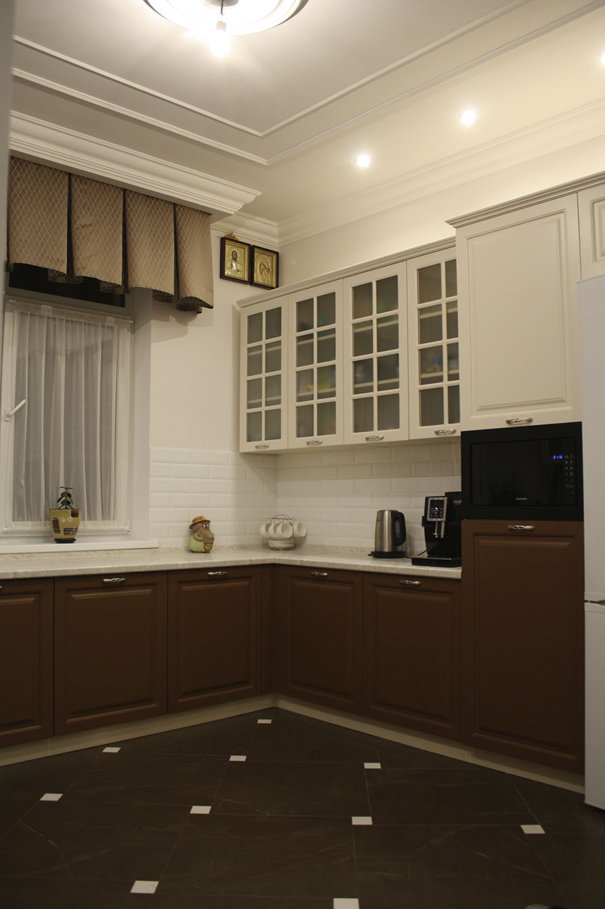

КУХНИ И МЕБЕЛЬ ПО ВАШИМ РАЗМЕРАМКухня по размеру.
Кухня по размеру.
По вашим привычкам.
Проектируем и изготавливаем кухни в Сарове. Подберём материалы и наполнение, доставим и установим готовую мебель.
Рассчитать мою кухню
Материалы ONVIKOПРОЕКТ, МАТЕРИАЛЫ И ДЕТАЛИВажна каждая
Важна каждая
деталь кухни.
Планировка, расположение техники и место для хранения. Заранее согласуем, как будет устроена ваша кухня, чтобы ей было удобно пользоваться каждый день.
Обсудить мой проект